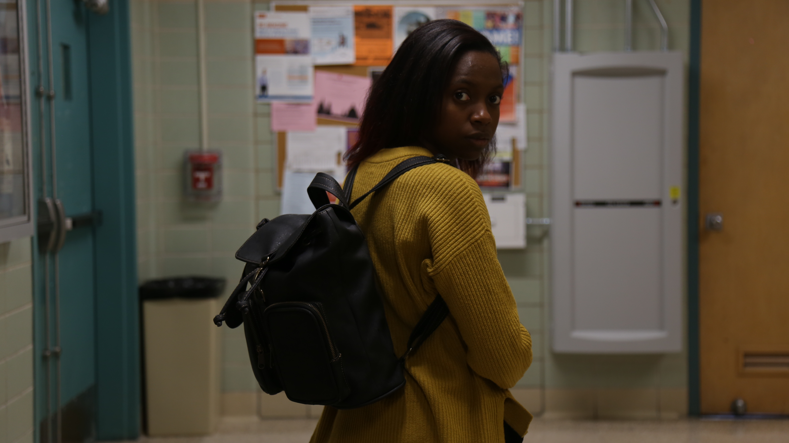
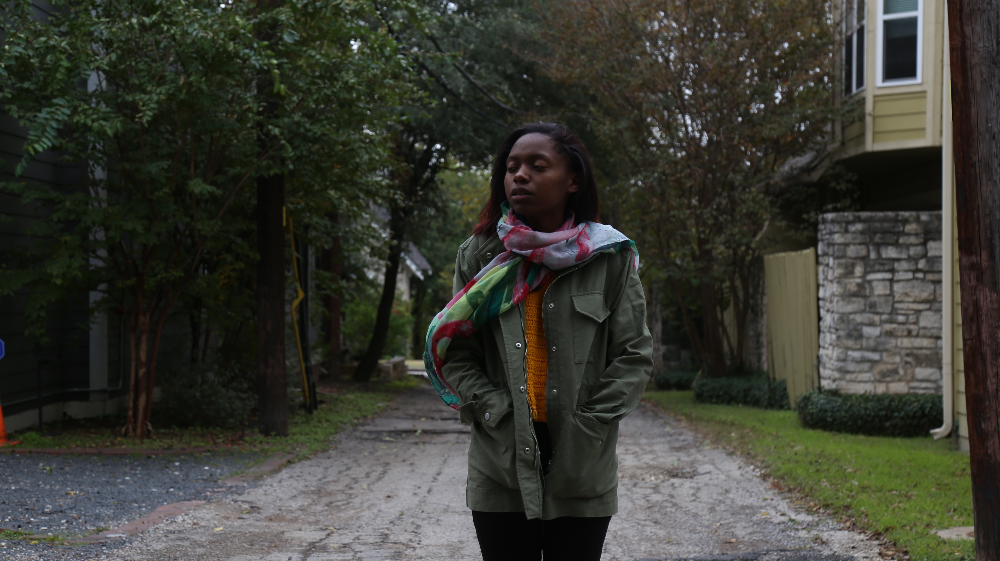
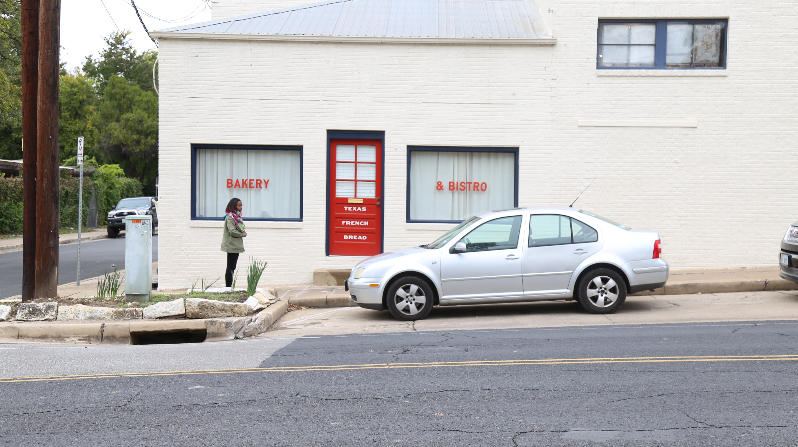
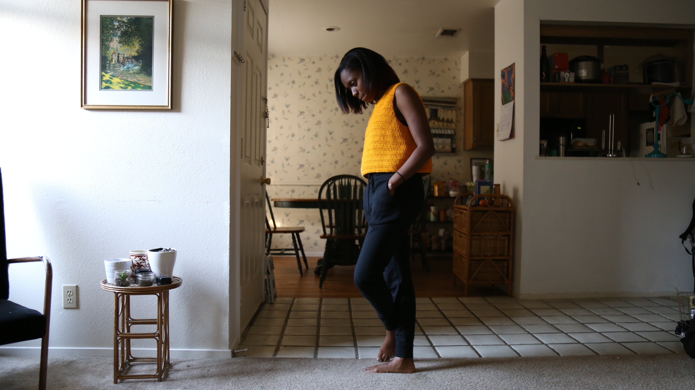
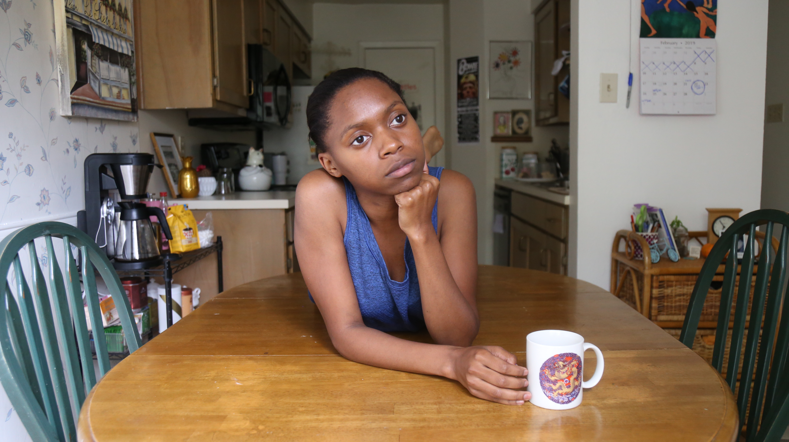
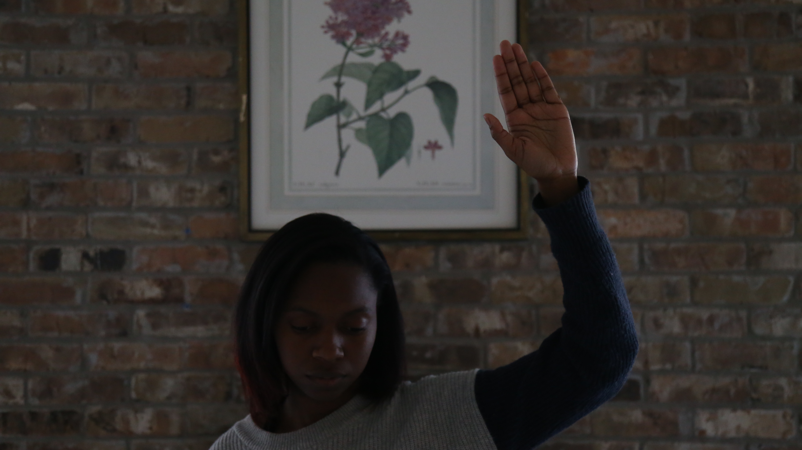

According to the prompt given by my professor, this is a short film about being an artist, but it's mostly about being anxious and how that can stop you from being an artist.
Though the story itself has gone through many iterations, the general concept has remained the same. I wanted to portray how mental illness—anxiety specifically—can hinder the artistic process. I was inspired by my own struggles with the vicious cycle of anxiety and how my own mind can sometimes stop me from doing the things I want to do.
     There are a plethora of challenges that come with making a film with no budget. My biggest challenge was lighting. Since I did not have the means to rent lighting equipment, I had to use all practicals--lamps, windows, etc. Another difficulty I faced was coloring. Though most of the editing process was simple for me since I have had some prior exposure to Premier, I had a difficult time with the color of the film.